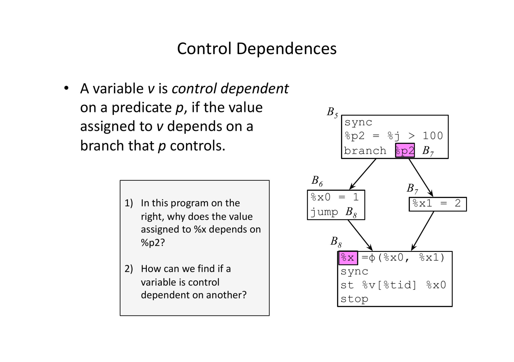

divergent flow
What is the cost of divergence
__global__ void dec2zero(int* v, int N) {
int xIndex = blockIdx.x*blockDim.x+threadIdx.x;
if (xIndex < N) {
while (v[xIndex] > 0) { v[xIndex]--;
}
}
} Depending on how we initialize the vector, we get different times and different subtracts
- Size of array 1048576
- Threads Per Block = 256
- Blocks In Grid = 4096
some initializers
// all 1
for (int i = 0; i < n; i++) {
A[i] = 1;
}
// subtracts 1048576
// time 0.1 ms// decreasing values from n-1 to 0
for (int i = 0; i < n; i++) {
A[i] = n - i - 1; // count should be N*(n+1)/2 = 54975572...
}
// subtracts 549755289600
// time 45.7 ms// Fill function to set all elements of the array to the middle value of n
for (int i = 0; i < n; i++) {
A[i] = n / 2; // count should be N*N/2 54975572...
// subtracts 549755813888
// time 45.6 ms// Fill function to set alternate elements to 0 or n
for (int i = 0; i < n; i++) {
A[i] = 0;
if (i%2){ A[i] = n;}
// subtacts 549755813888
// time 83.9 ms
}divergence example
```global void example(float* v){ if (v[tid]) < 2.0){ v[tid] = /=2; } else { v[tid] = 0; } }
and in ptx
1. b0: r1 = addr v[tid]
2. f1 = load r1
3. p1 = set.lt f0, 0.0
5. @p1? Bzr: f2 = div f1, 2
6. @p1? jmp Bst
7. !@p1? b1: f2 = 0.0
8. Bst: store r1, f2%%{init: {"flowchart": {"htmlLabels": false}} }%%
Graph TB
B0--> Bzr
B0--> B1
Bzr--> Bst
b1 --> Bstwhat happens to implement this?
harware version 1 (pre volta nvidia chips)
There is a hardware stack called the simt-stack, each entry is a pc and a 32 bit active mask. When hardware reachs an if- push 3 entries pc then, mask for then pc else, mask for else pc reconvergence pt, mask for recovergence
t0 t1 t2 t3 stack
a: r r r r a: 1111
--------------------------------------------------------
if (tid% 4 < 2) { r r r r b 1100
c 0011
f 1111
----------------------------------------------------------
b: r r - - c 0011
c: r r - - f 1111
-------------------------------------------------
} else {
d: - - r r
e: - - r r
}
f: stack is empty at else pc matches tos at f pc matches tos
rules: 1. divergent paths execute serially 1. threads execute in lock step 1. recoverge at immed post dominator
easy to find post dominator for reducible control flow
some code deadlocks:
1: *mutex = 0; 2: 3 while(!atomicCAS(mutex,0,1)); 3: // Critical Section 4: atomicExch(mutex,0);
volta and newer
Handles unstructured code nicely always makes forward progress
t0 t1 t2 t3
a: r r r r
--------------------------------------------------------
if (tid% 4 < 2) { r r r r
----------------------------------------------------------
b: r r - -
d: - - r r
c: r r - -
e: - - r r
-------------------------------------------------
f: r r --
- - r r
_syncthreads() r r r r
g: adds a new set of registers called barrier registers, which hold the indexes of threads that will synchronize
new instructions:
- bssy sets a barrier register to a mask of the threads that will need to reconverge (recovergence mask) and specfies the reconvergence point
- bmov copies between barrier registers and regular registers
- bsync forces threads in the mask to wait
- bbreak removes threads from mask
what does this solve
The Volta architecture introduces Independent Thread Scheduling among threads in a warp. This feature enables intra-warp synchronization patterns previously unavailable and simplifies code changes when porting CPU code. However, Independent Thread Scheduling can also lead to a rather different set of threads participating in the executed code than intended if the developer made assumptions about warp-synchronicity2 of previous hardware architectures.
When porting existing codes to Volta, the following three code patterns need careful attention. For more details see the CUDA C++ Programming Guide.
To avoid data corruption, applications using warp intrinsics (__shfl*, __any, __all, and __ballot) should transition to the new, safe, synchronizing counterparts, with the *_sync suffix. The new warp intrinsics take in a mask of threads that explicitly define which lanes (threads of a warp) must participate in the warp intrinsic.
Applications that assume reads and writes are implicitly visible to other threads in the same warp need to insert the new __syncwarp() warp-wide barrier synchronization instruction between steps where data is exchanged between threads via global or shared memory. Assumptions that code is executed in lockstep or that reads/writes from separate threads are visible across a warp without synchronization are invalid.
Applications using __syncthreads() or the PTX bar.sync (and their derivatives) in such a way that a barrier will not be reached by some non-exited thread in the thread block must be modified to ensure that all non-exited threads reach the barrier.
AMD
AMD implemented the early version. scalar registers are used as an ‘exec mask’ to indicate which vector lanes execute. The simt-stack can be done in software using scalar instructions
save the exec mask set exect mask to running threads do the then invert the exec mask if there is an else do the else restore the exec mask
static detection of divergences
can we determine which branches may cause divergences and which branches are uniform?
at a dirergent branch some threads go one way, some the other, we will need to insert instructions for reconvergence at a uniform branch all threads go the same way
divergent and uniform variables
A program variable is divergent if different threads see different values.
If different threads always see that variable with the same value, then the variable is uniform
divergent variables
- v = tid
- atomic()
- v is data dependent on a divergent variable
- v is control dependent on a divergent variable
## thread id is always divergent
__global__
void saxpy (int n, float alpha, float *x, float *y) {
int i = blockIdx.x * blockDim.x + threadIdx.x;
if (i < n) y[i] = alpha * x[i] + y[i]; } Each thread sees a different value
Threads in different blocks see the same threadid - is that a problem
variables defined by atomic operations
__global__ void ex_atomic (int index, float* v) {
int i = 0;
i = ATOMINC( v[index] ); } dependences
Two types of dependences: data and control.
If the program contains an assignment such as v = f(v1, v2, …, vn), then v is data dependent on the arguments v1,v2 …
If the value assigned to variable v depends on a branch controlled by p, then we say that v is control dependent on p.
Divergences propagate transitively on the graph determined by the dependence relation.
A variable might be divergent at one program point and uniform at another
an example
##

finding control dependences
let branch p, label be a branch instruction and \(I_p\) be its post dominator. A varable v is control dependent on p if
- v is defined inside the influence region of p
- v reaches \(I_p\)
some optimizations
- on AMD use scalar processor
- if a branch condition is uniform no need for a sync in the post dominator
- place uniform spills in shared memory